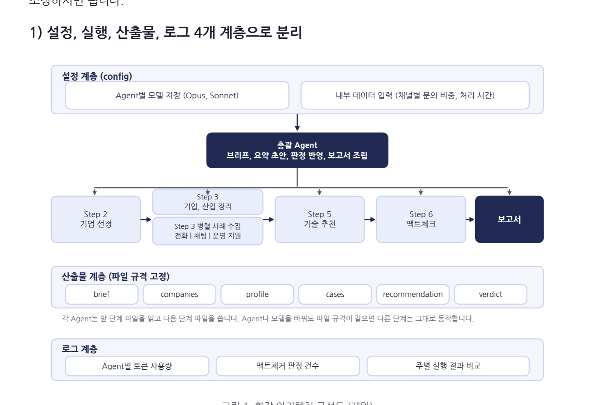
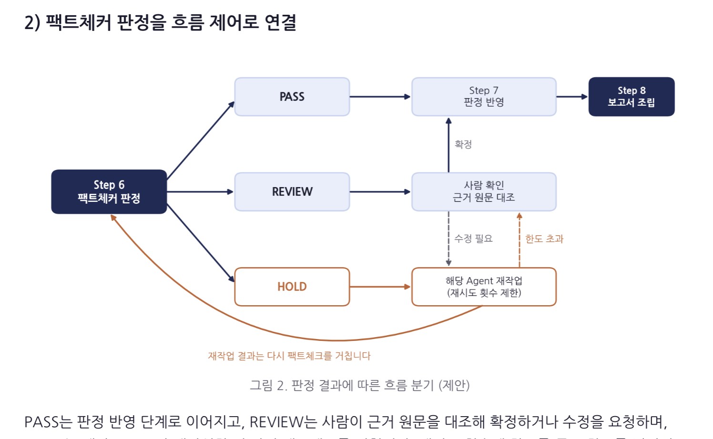
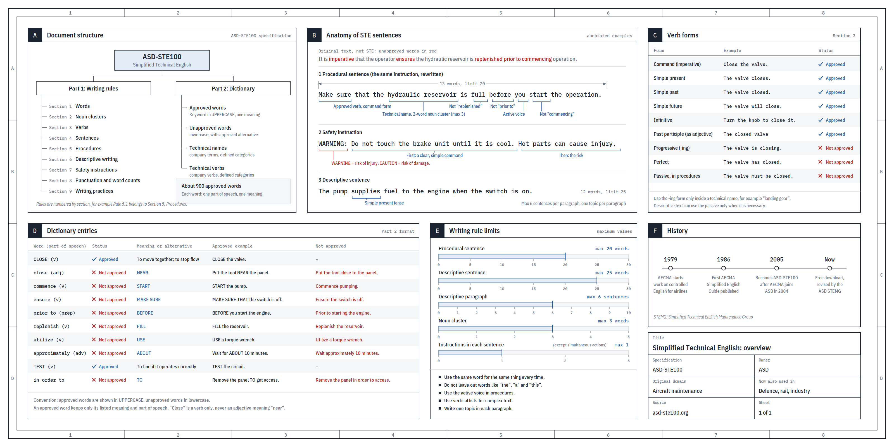
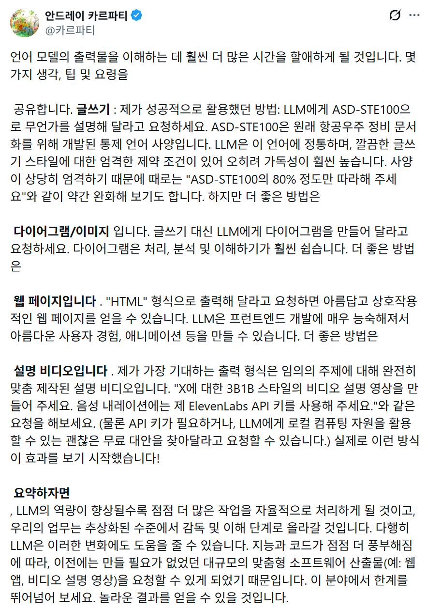

AFTER WORK AI CLUB · VERSION 2
AI를 쓰는 법에서,
일을 맡기는 판단으로.
1기에서 실제로 나온 질문을 4주 과정의 선택 기준·실습·검수 장치로 바꿨습니다.
4 WEEKS1 REAL WORK2 RUNS1 OPERATING SYSTEM
참여자 워크북 열기 ↗
AFTER WORK AI CLUB · VERSION 2
1기에서 실제로 나온 질문을 4주 과정의 선택 기준·실습·검수 장치로 바꿨습니다.
WHY V2
자동화 가능 여부보다 자동화할 시점이 필요했습니다.
모델·effort·컨텍스트를 구분하는 복구 기준이 필요했습니다.
계획과 실행에 같은 모델을 쓰지 않는 라우팅이 필요했습니다.
생성 이후의 사실성·가독성·형식 검수가 필요했습니다.
LEARNING JOURNEY
현재와 원하는 상태의 간극을 씁니다.
Agent를 만들지 않을 기준부터 정합니다.
역할·모델·비용·복구를 연결합니다.
믿고 쓸 수 있는 결과와 근거를 남깁니다.
DIRECT FEEDBACK · 15 ROOMS REVIEWED
15개 개인톡 중 명시적 수료 후 평가
업무·면접·포트폴리오 적용 신호
문제·요구사항·why/how 관점 전환
심화과정·다른 클래스 재참여 의향
개인톡은 질적 자료입니다. 전체 25명의 만족도 비율로 해석하지 않습니다.
THE NEW CLASS RHYTHM
공통 사례는 수업에서, 개인 프로젝트 완성은 과제로 가져갑니다.
ONE GOAL · THREE PATHS
천천히 정리한 뒤 강사 피드백을 받습니다.
결과와 속도가 비슷한 두 명이 기준을 교환합니다.
기본 산출물 뒤 멀티 Agent·라우팅·추가 검수를 다룹니다.
직무·속도·목표가 다른 팀 공유는 선택 사항입니다.
BEFORE CLASS
노션과 실습 페이지가 열린다.
한 줄을 작성하고 저장할 수 있다.
AI 로그인·플랜·파일 업로드가 된다.
1기에서 최소 8명이 계정·초대·편집권한 문제를 보고했습니다. 프리플라이트는 행정이 아니라 학습 설계입니다.
WEEK 01 · WHY GAP
01 / PROBLEM
잘 정리하려고 멈추지 않습니다. 친구에게 말하듯 현재 상황부터 적습니다.
OBSERVATION BEFORE SOLUTION
도구와 구조가 이미 답으로 들어가 있습니다.
누가, 언제, 어떤 비용을 겪는지 확인할 수 있습니다.
PROBLEM CARD
지금 누가 어떻게 처리하는가?
얼마나 자주, 얼마나 오래 걸리는가?
무엇이 달라지면 성공인가?
민감정보·승인·예산·마감은?
HOW MIGHT WE
어떻게 하면 [사용자]가 [상황]에서 [원하는 결과]를 얻도록 도울 수 있을까?
AI를 쓰지 않는 대안도 반드시 한 개 적습니다. 비교가 있어야 Agent 선택이 판단이 됩니다.
EVIDENCE, NOT POLISH
최근 4주 동안 몇 번 발생했는가?
한 번 처리하는 데 몇 분이 걸리는가?
오류·대기·재작업은 어디서 생기는가?
미확인은 실패가 아니라, 다음에 확인할 항목입니다.
WEEK 01 OUTPUT
WEEK 02 · INTELLIGENCE FIT
02 / DECISION
Agent 제작은 목표가 아닙니다. 재사용 가치가 구축비용보다 클 때만 선택합니다.
BUILD-OR-NOT
빠르게 만들고 사람이 직접 마무리합니다.
입력과 출력 형식이 반복되는지 관찰합니다.
역할·절차·검수·중단 조건을 구조화합니다.
판단이 매번 크게 달라지거나 실패 비용이 높다면 반복 횟수가 많아도 사람 중심으로 유지합니다.
DECISION MATRIX
대화형 AI와 사람 마무리
템플릿 또는 단일 Agent
AI는 초안·탐색만 지원
검수·예외·중단 조건부터 설계
AGENT SPEC
누구의 어떤 일을 돕는가?
성공 상태는 무엇인가?
필수 자료와 누락 대응은?
작업 순서와 분기는?
형식과 저장 위치는?
승인·재시도·중단은?
REAL JOB OUTCOME
경력기술서 → 구조 → 수정 가능한 포트폴리오 초안
입력 양식 → 레퍼런스 → 초안 → 검수 → 버전 기록
WEEK 02 OUTPUT
WEEK 03 · OPERATING SYSTEM
03 / OPERATE
역할을 늘리기 전에 단일 Agent에서 실제로 생긴 문제를 확인합니다.
WHEN TO SPLIT
역할마다 읽어야 할 원천이 다릅니다.
계획·작성·평가의 통과 기준이 다릅니다.
실행 권한과 사람 승인 지점이 다릅니다.
같은 기준을 쓰는 Agent를 이름만 나누지 않습니다.
FOUR LAYERS
역할·권한·자료
순서·전달·분기
중간·최종 산출물
실패·수정·다음 기준

MODEL ≠ EFFORT
같은 모델이 더 오래 검토하면 좋아질 문제인지 봅니다.
과제 자체가 모델 역량을 넘을 때 올립니다.
무조건 가장 비싼 모델을 쓰는 대신, 실패 원인을 먼저 분류합니다.
MODEL ROUTING
로컬 LLM 여부는 하드웨어 구매보다 먼저 작업 분리와 실제 사용량으로 판단합니다.
SEVEN-MINUTE RECOVERY
COST IS AN OUTCOME
사람의 대기·수정까지 포함
첫 결과가 기준을 통과한 비율
구축비용을 나눌 실제 실행 횟수
저렴한 모델이 세 번 실패하면, 더 싼 선택이 아닐 수 있습니다.
WEEK 03 OUTPUT
WEEK 04 · QUALITY GATES
04 / VERIFY
결과가 나왔다는 사실과, 결과를 사용할 수 있다는 판단을 분리합니다.
PASS · REVIEW · HOLD

ASD-STE100 PRINCIPLES

FORMAT IS PART OF THE ANSWER
논리와 근거
비교와 흐름
탐색과 입력
시연과 설명

SIX-MINUTE DEMO
| 시간 | 발표 내용 | 보여줄 증거 |
|---|---|---|
| 0:00–0:45 | 실제 문제와 근거 | 빈도·시간·오류 |
| 0:45–1:30 | Agent 선택 판단 | 대안 비교·5회 기준 |
| 1:30–3:00 | 역할·입력·흐름·모델 | 운영도 |
| 3:00–4:30 | 두 번의 실행 | 성공·실패·수정 로그 |
| 4:30–5:30 | 품질 검수 | 사실·가독성·형식·승인 |
| 5:30–6:00 | 다음 30일 | 재사용 조건과 측정 |
AFTER THE COURSE
같은 업무에 실제로 한 번 더 사용
시간·오류·대기 변화를 기록
계속 사용·수정·중단 중 하나 선택
실패를 숨기지 않고, 다음 기준으로 바꿉니다.
FROM TOOL USER TO WORK DESIGNER
문제 → 선택 → 운영 → 검수. 이제 새로운 도구가 나와도 같은 기준으로 판단할 수 있습니다.
워크북으로 실행 시작하기 ↗